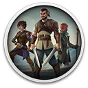
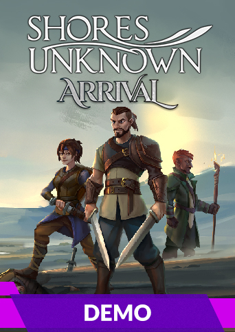

Shores Unknown: ArrivalDetalhes
 |
|
| Tempo de jogo | Não Jogado |
| Última Atividade | Nunca |
| Adicionado | 07/06/2026 0:35:42 |
| Modificado | 07/06/2026 2:35:06 |
| Status de Conclusão | Not Played |
| Biblioteca | Gog |
| Fonte | GOG |
| Plataforma | PC (Windows) |
| Data de Lançamento | |
| Pontuação da Comunidade | |
| Avaliação da crítica | |
| Pontuação do Usuário | |
| Gênero | |
| Desenvolvedor | |
| Editor | |
| Funções | |
| Links | |
| Tag | |
Descrição

Shores Unknown: Arrival is a free demo which offers save data carry-over to the full game. Arrival sees you at the end of your trek to the northernmost shore in the Empire, searching for the reason why you were sent to such a remote village. Problems arise when visitors of unknown origin are spotted through the distant fog that blankets the sea, and soon you find yourself under threat from the dreaded Inquisition.
A turn-based tactical RPG rendered in a rich, low-poly aesthetic. Build your own team of mercenaries, forge alliances, wage battles, and journey beyond the seething wall of fog known only as the Murk in this decision-influenced, narrative-driven adventure. What dangers await you on Shores Unknown?
THE SHORES BECKON
Shores Unknown takes place in a land ruled by the iron-fisted Crown, and policed by the fearsome Inquisition, from whom it is said there is no escape. To the south lies the Empire and perpetual war, while to the north there is only the Murk — a seething wall of fog from which no ship has ever returned. In the midst of these grand forces, both natural and otherwise, our heroes must find a way to survive and to pursue their dreams of liberty.Play as the newly-made leader of a mercenary company, fresh off an assignment gone awry. Now on the wrong side of the Crown, allies and loyalty are paramount. Forced to venture through the maw of the Murk in a search for truth, players will explore unknown lands, forge new alliances, and wage battle against those who would see to their end. What dangers await on Shores Unknown?
GAME FEATURES
- Gridless tactical turn-based combat: take your time to assess the situation and command your characters in the Order Phase, then watch your strategy come to life during the Action Phase as the characters maneuver around the battlefield and carry out their orders.
- Adaptive character advancement system: characters learn new skills and unlock new classes depending on their equipment and combat choices.
- Deep party customization options allow the player to build the perfect mercenary team of their choice, allowing full control over equipment and skills used by each character.
- Vibrant world rendered in low-poly stylistic full of little details to immerse yourself in. Explore the various locations of the game, interact with dozens of characters and uncover the secrets of the Shores.